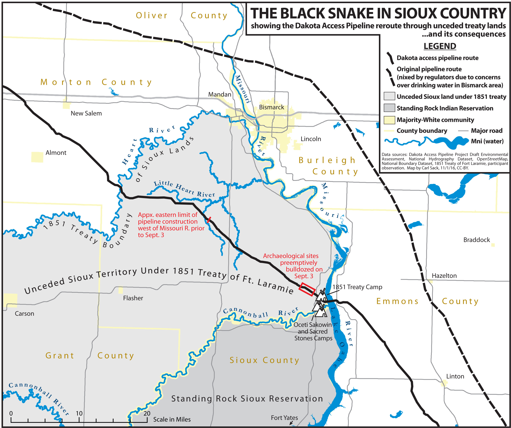
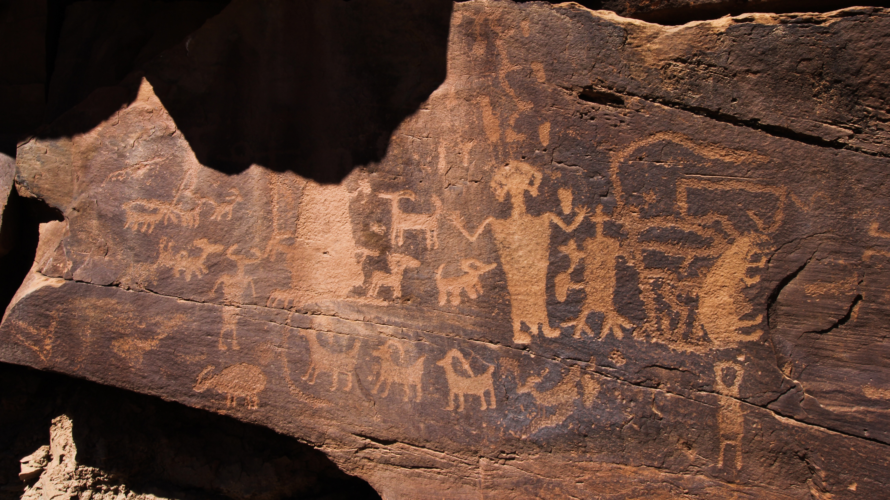

Section 106
ANP 491
Kaitlyn Szarenski, Adam Kaline
Last Updated: March 17, 2026
What is Section 106?
Section 106 is a part of the larger National
Historic Preservation Act (NHPA) legislation that was enacted in 1966.
Section 106 requires undertakings that are on federal land or employ
federal funding to take into consideration the effect of the
undertaking on affected historic properties.
What is a Historic Property?
A historic property is any site listed or eligible for
listing on the National Register of Historic Places (NRHP),
which itself is a part of the National Park Services.
To be added to the NRHP, a property must meet at least one of the
following criteria:
- Criterion A - The property is associated with a historically significant event.
- Criterion B - The property is associated with a historically significant person.
- Criterion C - The property is emblematic of a historically significant style.
- Criterion D - The property has yielded or is likely to yield historically significant information.
It is also expected that State Historic Preservation Officers and Tribal Historic Preservation
Officers are consulted to ensure all possible historic sites are identified.
Background of Section 106
Section 106 as it appears in NHPA
§306108. Effect of undertaking on historic property
- Criterion A - The property is associated with a historically significant event.
- Criterion B - The property is associated with a historically significant person.
- Criterion C - The property is emblematic of a historically significant style.
- Criterion D - The property has yielded or is likely to yield historically significant information.
“The head of any Federal agency having direct or indirect jurisdiction over a proposed Federal or federally assisted undertaking in any State and the head of any Federal department or independent agency having authority to license any undertaking, prior to the approval of the expenditure of any Federal funds on the undertaking or prior to the issuance of any license, hall take into account the effect of the undertaking on any historic property. The head of the Federal agency shall afford the Council a reasonable opportunity to comment with regard to the undertaking.”
Purpose of Section 106
Section 106 dictates that federal agencies or federally associated programs must recognize and identify the effect of any undertaking near historic property on or eligible for the National Register. This submission must allow a reasonable opportunity for State Historic Preservation Officers, tribes, and other affected communities the opportunity to comment in the form of consultation.
History of Section 106
Section 106 was enacted in 1966 as part of the National Historic Preservation Act (NHPA), in response to the loss of several historic sites to urban expansion. The community was not involved directly in the development of Section 106, but as public engagement is an overall priority of the NHPA, it is by extension a priority of Section 106.
Impacts of Section 106
Dakota Acess Pipeline
.jpg)
Paragraph 1 here
Paragraph 2 here The image will be pushed to the right alignment

Paragraph 3 here
Nine Mile Canyon
Nine Mile Canyon, located in Eastern Utah,
is known for its many historic properties,
most notably its extensive prehistoric rock art,
spread across roughly 10,000 panels comprising over
100,000 individual images, all of which bear immense
significance to the local Ute people. However, the
discovery of natural gas reserves in the region led the
energy company Bill Barrett Corporation, in collaboration
with the Bureau of Land Management, to propose an 800-well
natural gas development in 2005.

The development of the well would lead to an
increase in road traffic, which led to concerns
of debris and pollutants kicked up by motor
vehicles eroding the petroglyphs. To combat this,
the Bill Barrett Corporation introduced magnesium
chloride-based dust suppressants to dampen the
roads and prevent dust from covering the artwork.
Unfortunately, magnesium chloride is corrosive
and clings to rock, further damaging the
petroglyphs.
African Burial Ground
Paragraph 1 here

Paragraph 2